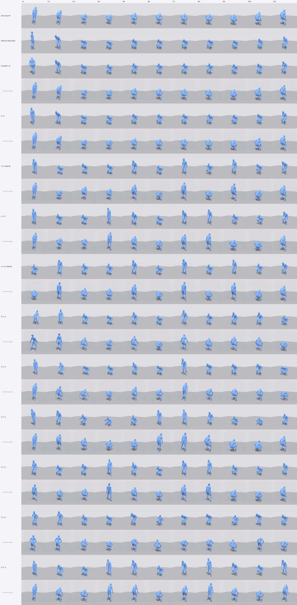
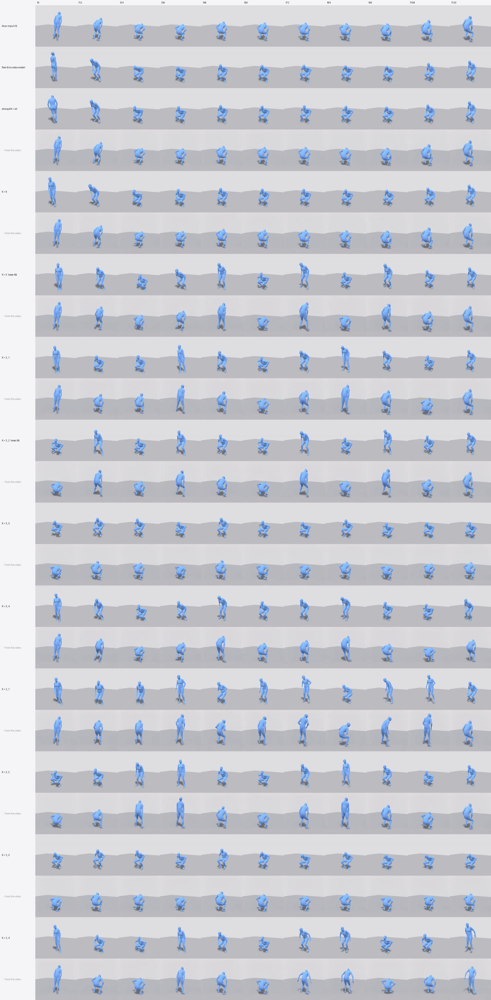

Exp 1 · The round trip — does motion come back more natural than it went in?
Result 5 — squat
"A person squats down." Unusable. Pose recovery resolves this crouch front-to-back the wrong way, and it does so in the control column — before the video model is involved at all. Nothing in this row can be concluded from.
The failure#
Input motion (A)MotionGPT3 → SMPL, the blue render
floor — returned (B)no video model in the loop
K = all — returned (B)16 frames — every 8th
a person squats down
squat
unusablethe beat controlled descent, bottom position, drive back up
s1234
s5678
s1234
s5678
s1234
s5678
floor, and K = all. The input faces away; both recoveries face
towards. No video model was involved in either of the right-hand cells.Why it happens#
A deeply folded crouch seen from one fixed viewpoint is close to front-back ambiguous in silhouette. Curled into a ball, the shape you project is nearly the same whichever way you are facing. GVHMR consistently resolves that ambiguity the other way.
The consequence#
The clips below are included for completeness and for anyone who wants to confirm the diagnosis. They should not be read as results.
Input motion (A)MotionGPT3 → SMPL, the blue render
K = 5 — returned (B)0 · 32 · 64 · 88 · 120
K = 3_2 — returned (B)64 · 88 · 120 — head free
a person squats down
squat
unusablethe beat controlled descent, bottom position, drive back up
s1234
s5678
s1234
s5678
s1234
s5678
K = 5 (353/338 mm) and K = 3_2 (336/351 mm). Compare each with floor above
rather than with the input — against floor they are barely different, which is the
tell that the video model is not what is causing the discrepancy.K = 5 — video0 · 32 · 64 · 88 · 120
K = 5 — returned (B)0 · 32 · 64 · 88 · 120
K = 3_2 — video64 · 88 · 120 — head free
K = 3_2 — returned (B)64 · 88 · 120 — head free
a person squats down
squat
unusablethe beat controlled descent, bottom position, drive back up
s1234
s5678
s1234
s5678
s1234
s5678
s1234
s5678
Why this matters beyond one clip#
The numbers for this prompt#
| seed | condition | joint err mm | jerk vs. input | skate mm/s |
|---|---|---|---|---|
| 5678 | K2_1 | 316.1 | 6.897 | 274.0 |
| 1234 | K2_2 | 333.2 | 1.523 | 187.6 |
| 1234 | K3_2 | 335.7 | 2.437 | 216.1 |
| 1234 | K2_1 | 335.8 | 2.879 | 55.9 |
| 1234 | K2_4 | 336.6 | 6.424 | 235.4 |
| 5678 | K5 | 338.0 | 4.465 | 917.2 |
| 1234 | K3_3 | 340.1 | 1.904 | 215.6 |
| 5678 | K2_2 | 346.1 | 3.407 | 234.9 |
| 1234 | K9 | 347.1 | 0.724 | 116.1 |
| 1234 | Kall | 347.4 | 1.808 | 72.5 |
| 5678 | K9 | 347.9 | 1.144 | 61.9 |
| 1234 | K2_3 | 348.7 | 2.414 | 107.0 |
| 1234 | K3_1 | 350.5 | 5.758 | 232.8 |
| 5678 | Kall | 350.5 | 2.8 | 59.3 |
| 5678 | K3_2 | 351.0 | 3.331 | 221.9 |
| 5678 | K2_4 | 351.0 | 2.83 | 187.1 |
| 5678 | K3_1 | 352.1 | 5.597 | 280.8 |
| 1234 | K3_4 | 352.3 | 2.237 | 299.2 |
| 5678 | floor | 353.0 | 2.222 | 60.7 |
| 1234 | K5 | 353.1 | 2.26 | 234.1 |
| 1234 | floor | 355.8 | 2.156 | 36.1 |
| 5678 | K2_3 | 356.0 | 1.344 | 150.9 |
| 5678 | K3_4 | 357.1 | 2.389 | 838.0 |
| 5678 | K3_3 | 360.9 | 1.637 | 133.2 |
floor included. The flatness of this
column is the diagnosis: if the video model were responsible, floor would be low
and the loose sets high.Timing strip#
Timing stripinput above every returned motion
a person squats down
squat
unusablethe beat controlled descent, bottom position, drive back up

s1234
s5678